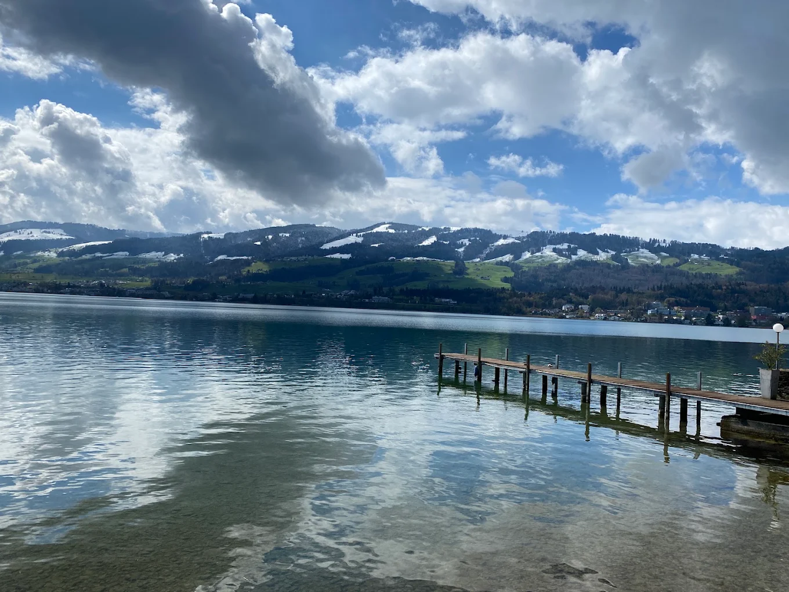

Der Zürichsee ist einer meiner Lieblingsorte. Ich gehe dort gerne spazieren und geniesse die Aussicht.
Ich halte mich dort gerne auf,
weil es ruhig und schön ist.

Mehr über den Zürichsee erfahren
| Platzspitz | Park | 3 km | Gratis | Ruhig | Mittel |
| Chinagarten | Garten | 4 km | Gratis (Aussenbereich) | Ruhig | Wenige |
Hier kannst du eine ÖV-Verbindung zum Zürichsee suchen.